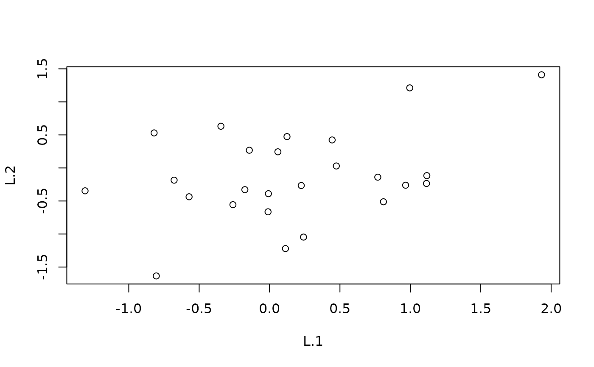
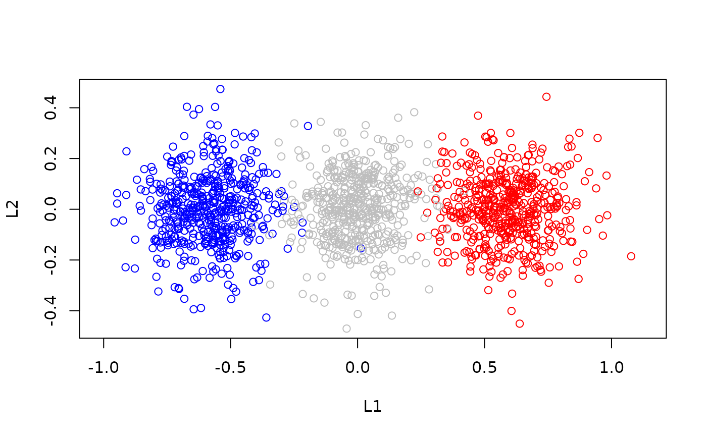

Obtains predictions from a fitted rrGDM object. This method can either project
new environmental data into the latent ordination space or calculate pairwise
dissimilarities between sites. It supports parametric bootstrapping to assess
parameter uncertainty and site-level dispersion.
Arguments
- object
An object of class
rrGDM.- newdata
A data frame containing new environmental predictor values. If
NULL, predictions are made for the original data used in model fitting.- boot
Logical. Should predictions account for parameter and site-level uncertainty via simulation? Defaults to
TRUE. IfFALSE, a single prediction is returned andsample_param,sim_site,n_simandprobsare ignored.- sample_param
Logical. If
TRUE, parameters (lambdaandbeta) are sampled from the variance-covariance matrix. This requires standard errors (fit the model withse = TRUEor runinclude_se). Defaults toTRUE.- n_sim
Integer specifying the number of simulation draws. Defaults to 1000.
- sim_site
Logical. Should site-level random variation be included in the predictions? Defaults to
TRUE.- ordination
Logical. If
TRUE, returns coordinates in the latent space. IfFALSE, returns pairwise dissimilarities. Defaults toFALSE.- type
Character string;
"response"returns dissimilarities on the observed scale (e.g., 0-1), while"link"returns Euclidean distances in the latent space. Defaults to"response".- probs
Numeric vector of probabilities for calculating quantiles from the simulated distribution. Defaults to
c(0.025, 0.5, 0.975).- conditional
Logical. If
TRUE, returns predictions from the fitted (conditional) latent positions of the samples used to fit the model, including sample-level and random-effect deviations. Only available whennewdata = NULL. Setsboot = FALSE. Defaults toFALSE.- ...
Ignored.
Value
A data.frame.
If ordination = TRUE: the latent coordinates (columns L.1, ..., L.k),
the sample number (sample) and the columns of newdata. With
boot = TRUE there is one row per sample and draw, and a column draw.
If ordination = FALSE: one row per pair of rows of newdata, with the row
numbers of the pair (s1, s2) and either the predicted dissimilarity
(dist, if boot = FALSE) or one column per value of probs
(named "2.5%", "50%", ..., if boot = TRUE).
Details
Simulations (boot = TRUE) use R's random number generator: call
set.seed() beforehand for reproducible results.
Examples
set.seed(2)
# simulate data
n <- 25 # sites
p <- 25 # species
env <- data.frame(temp = rnorm(n), moist = rnorm(n))
eta <- as.matrix(env) %*% matrix(rnorm(2 * p), 2, p)
Y <- matrix(rpois(n * p, exp(1 + 0.8 * eta)), n, p,
dimnames = list(paste0("site", 1:n), paste0("sp", 1:p)))
fit <- rrGDM(Y, env, k = 2,
formula = ~ temp + moist,
family = "binomial")
#> ℹ Preparing data
#> ✔ Preparing data ... done
#>
#> ℹ Finding initial parameters (dbRDA)
#> ✔ Finding initial parameters (dbRDA) ... done
#>
#> ℹ optimisation
#> ℹ Start 1/1: objective = 1670.1661
#> ℹ optimisation
#> ✔ optimisation ... done
#>
# predict
pred <- predict(fit, boot = FALSE) # point predictions, all pairs
#> ℹ Returning dissimilarities as distances between centroids.
#> ! Note: Distances between centroids are not equivalent to the expected
#> (average) distances or dissimilarities between samples, which can be much
#> larger.
#> • To calculate expected dissimilarities between samples, set `boot = TRUE` and
#> `sim_site = TRUE`.
head(pred)
#> s1 s2 dist
#> 1 1 2 0.8835308
#> 2 1 3 0.8790634
#> 3 1 4 0.8763481
#> 4 1 5 0.8586837
#> 5 1 6 0.8996577
#> 6 1 7 0.8921820
# Predict ordination coordinates
pred_ord <- predict(fit,
ordination = TRUE, # latent positions
conditional = TRUE)
head(pred_ord)
#> L.1 L.2 sample temp moist
#> 1 -0.80450922 -1.6343846 1 -0.89691455 -2.4517064
#> 2 0.05922709 0.2442293 2 0.18484918 0.4772373
#> 3 0.80887279 -0.5117871 3 1.58784533 -0.5965582
#> 4 -0.81997210 0.5303289 4 -1.13037567 0.7922033
#> 5 -0.14375128 0.2680057 5 -0.08025176 0.2896367
#> 6 0.12394223 0.4742975 6 0.13242028 0.7389386
plot(pred_ord[,c(1,2)])

# with newdata
new <- data.frame(temp = c(-1, 0, 1), moist = c(0, 0, 0))
pred_new <- predict(fit, newdata = new)
head(pred_new)
#> s1 s2 2.5% 50% 97.5%
#> 1 1 2 0.2358371 0.4706934 0.6278474
#> 2 1 3 0.5744552 0.7027264 0.7928866
#> 3 2 3 0.2371924 0.4687820 0.6363789
# Predict position in ordination
pred_new_ord <- predict(fit,
newdata = new,
ordination = TRUE,
n_sim = 500)
# Visualise sample-level variability
plot(pred_new_ord$L.1,
pred_new_ord$L.2,
xlab = 'L1',
ylab = 'L2',
asp = 1,
col = c('blue', 'grey', 'red')[as.numeric(as.factor(pred_new_ord$temp))])
